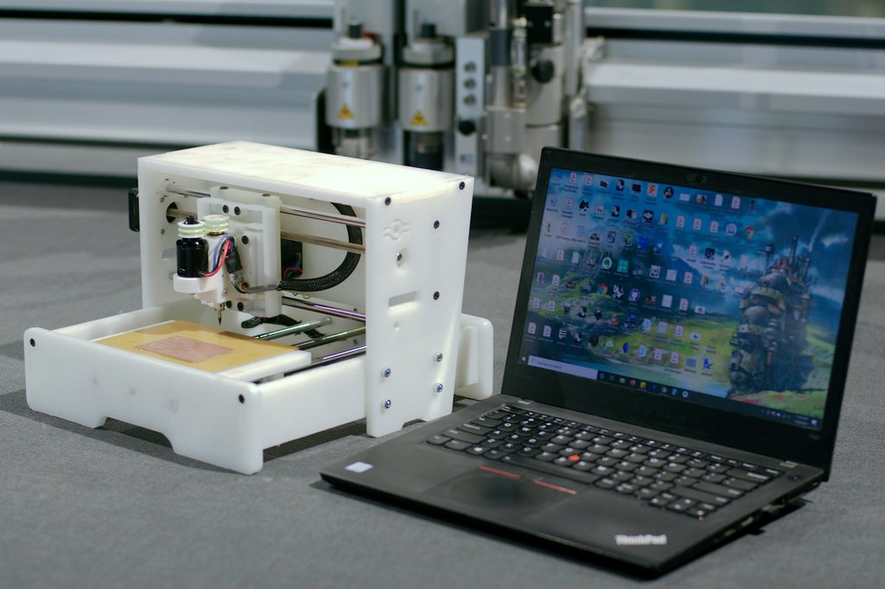
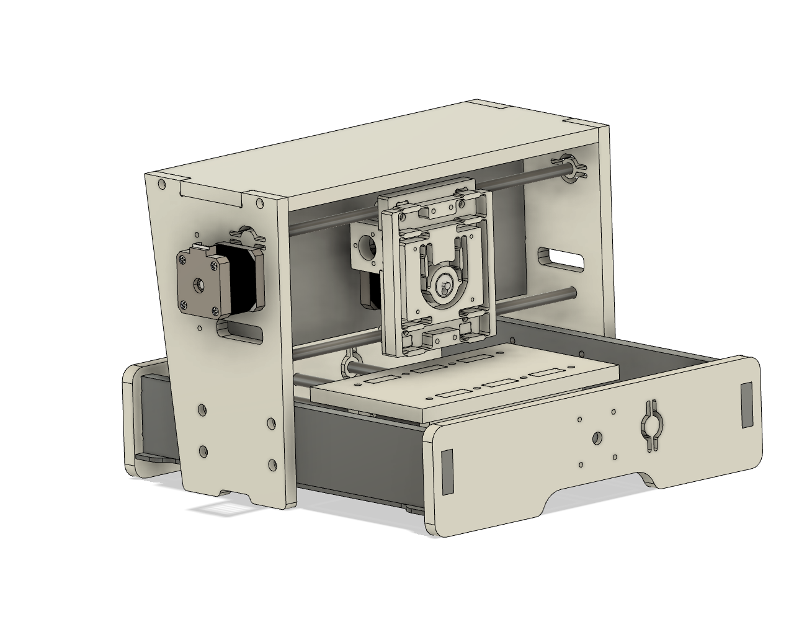
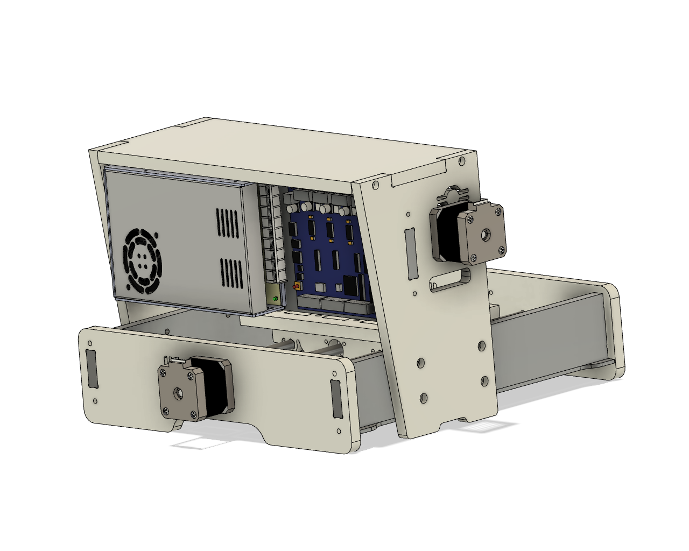
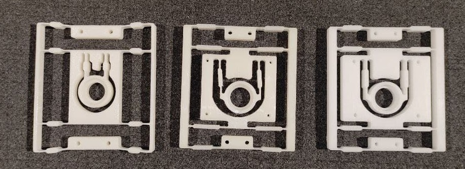
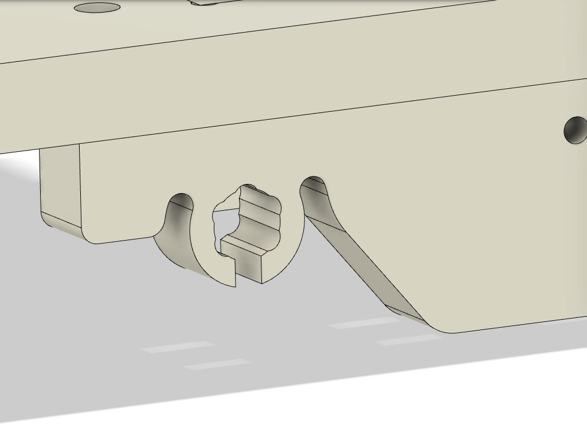
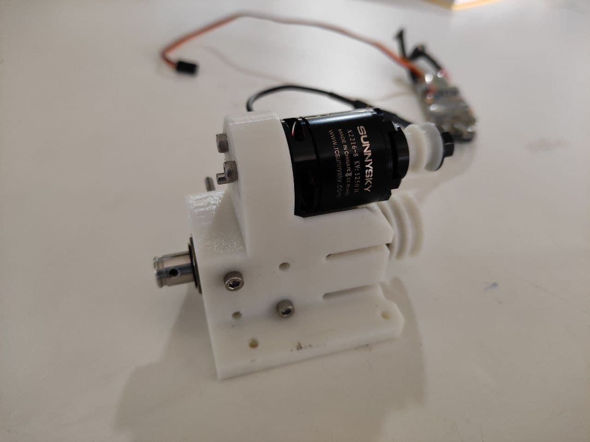
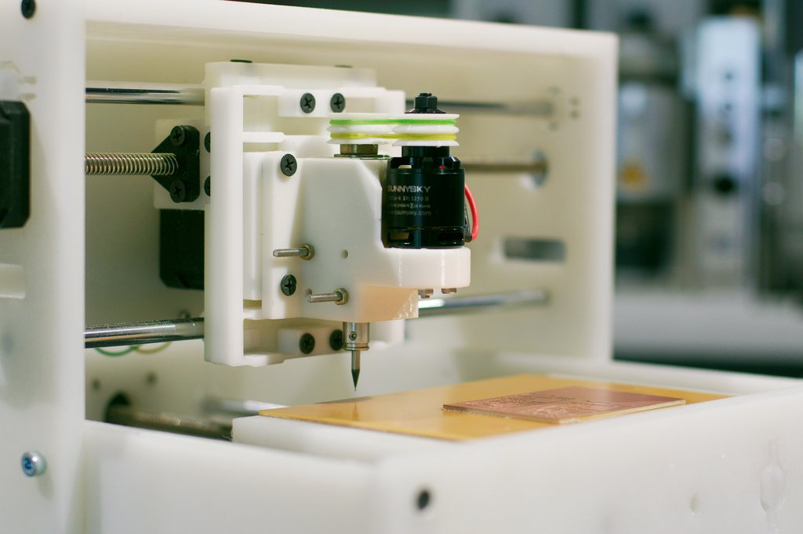
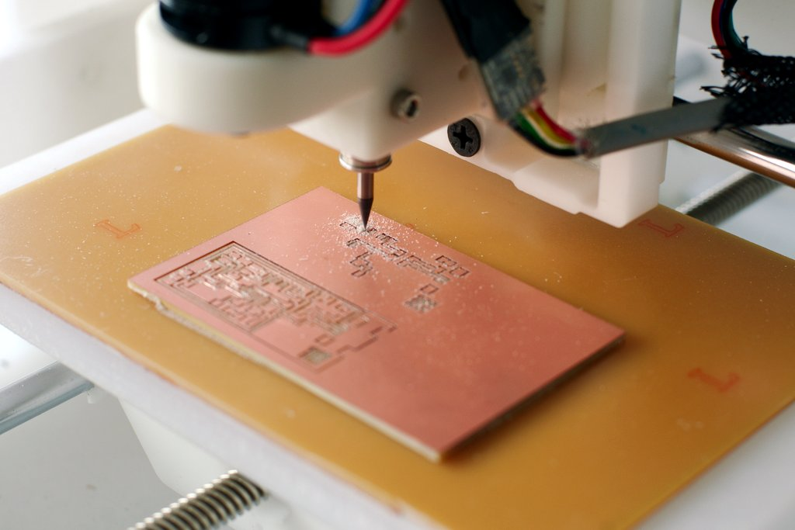

Fab Neo
Fab Neo is a compact milling machine designed for PCB fabrication. The Z axis features a simple flexure based motion system driven by a CAM. The X,Y stages all run on Delrin plain bearings which are easily machined, and driven by Lead screw stepper motors. The spindle is a BLDC motor attached to a bearing block (Modella).


#Machines that Make

The entire machine was made using the ZUND cutter.
Motivation
Every prototyping lab requires a way make their own Circuit boards. Machines capable of milling PCB's runs in the range of 5K USD. Circuit milling is a core capability such that its viable to have hardware dedicated to it.
My Aim with this project is to make the dedicated hardware as economical and accessible by reducing the components required and to use fabricatable parts where possible. All parts, sliding and fixed are milled out of various plastics with different material properties to match requirements.
The Idea
Machines like the SRM20, MDX20m are general purpose milling machines which are accurate enough to be used for circuit milling. They are incredibly rigid machines with good tolerances.
In an effort to simplify the design we started with the Z-axis.
For PCB mills we only ever need two accurate Z positions.
- 0.15 mm depth to mill out the traces.
- 1.5 mm depth to mill out the board and the holes.
So why would we need a complicated linear stage for essentially 5-10 mm in total Z-travel?
Precise motion over small distances are inside the realm of Flexures.
The Design


The machine is designed for compactness and rigidity, the strong cross beams resists torsional and lateral forces. It also acts as a mounting plate for the control electronics and power supply.
Flextures
A basic component of a flexure is a cantilevered beam under load. The deflection of the beam is given by the bending equation, the parameters that control the travel of the bend and the force required are Young's Modulus of material, Beam length, cross sectional thickness, Force applied
The constrain with Flexures is that the motion needs to be linear. A simple mechanism to achieve this is the double parallelogram flexure which has two sets of beams which oppose each others rotational component, giving linear motion.

Now that we have a linear slide, we need a way to actuate it.
Linear Actuation
The usual actuation methods are Screws or belts each with their own advantages, but considering the small travel range, a CAM is best suited for converting the rotary position to linear actuation.
The CAM would be connected directly to the stepper's D-shaft, and set screws to hold them tight.
Combination Z-axis
I combined the double parallelogram flexure with flexurally mounted CAM in the center to actuate it. This combination drive unit can be milled out of a single piece of plastic.

Video of the first successful 3D printed version. The print lasted about 150 continuous revolutions till it broke.
plastics, 3D prints are not durable and fatigue will cause flexure to break after some ~100 revolutions.
Various Iterations

From the left 3D printed, HDPE, Delrin. In successive iterations the flexure thickness was increased to 1.2 mm and the lengths reduced to provide additional rigidity for out-of-plane forces.
Linear Motion stages
I used chrome shafts as they are readily available in various diameters. The next part is the making bearings that will move along them.
Linear Roller Bearings Vs Plain bearing
General Design Principles Bearing Dupont
Good quality Linear roller bearings provide smooth motion and rapid acceleration capabilities. They can be expensive and require harder shafts with tight tolerances to get good results.
Plastic plain bearings are simpler to make and if the material is matched to the process, they will last a long time with minimal maintenance. A thing we want to avoid with plastic bearings is Stick and Slip which occurs when the bearing switched between static and Dynamic modes of friction.
I've chosen Delrin as the bearing material as the material is rigid, Dimentionally stable, easy to machine and it matched well with hardened chrome shafts. Delrin can be structural as well as a bearing.
Failure Modes
Plastic bearings fail mainly by two modes, Heat and debris.
-
Plastics are a insulators, the heat generated form the motion will causes it to expand thereby reducing the clearance and increasing the friction. They can be solved by providing either a metal backing like in composite bearings to take away the heat or by using lubricants which reduce the coefficient of friction.
-
Inclusions happen when external debris get trapped inside the bearing and rub against the shaft. Solved by providing a felt ring or rubber seal in front of the bearing to clear debris from the shaft. Also mitigated to an extend by providing slots in the bearings to allow for the debris to pass through.
Bearing calculations
Bearings subjected to increasing load/speed will fail due to excessive temperature rise, known as the limiting PV value. Often used to compare different materials, they are a function of load, speed, friction coefficient, and heat dissipation. PV values should be taken as guidelines as they depend on the testing conditions and do not reflect actual performance.

Slots provided to allow for the debris from the milling to flow through without getting wedged in the plastics and dragged across the shafts. A Notch is cut out on the bearing to provide a slight compliance to bearing in case if it is operating in limiting conditions.

The stages are driven by lead screw stepper motors with Anti-backlash nuts to provide repeatable motion. The stages are rigid and do not suffer from the stick and slip phenomenon of the plastic bearings.
Note- It is entirely possible to replace the Delrin bushings with Phenolic Laminates These are composites of epoxy and cotton fibers, they are harder and lasts much longer, and additional benefit being they can absorb oils and lubricate themselves for a long time.
Fabrication
The designs were nested in a 80x40 cm sheet of 10 mm HDPE.

Machining plastics are a breeze, following some precautions. Firstly, use single flute end mills for faster material removal. avoid plunging too deep too fast. If plastic is left unchecked they will melt and bind causing it to break.

The Z-axis flexure can be milled out in a single piece. Pockets are provided to seat the bearing into the CAM.

A 6702 bearing provides smooth circular motion for the CAM, a sliding contact with proper clearances would also work for this setup, thereby eliminating the bearing.
Spindle
 Spindle casing designed by Jogin Fransis.
Spindles are usually a precision shaft with pre-loaded bearings at both side with a motor attached to one end and provision to fix a tool on the other. They need to withstand axial and radial cutting forces.
The spindle runout determines the quality and min resolution. Runout happens when the spindle is not aligned with the main rotational axis. They can be caused by bearing clearances, improper preload, concentricity of the shafts and collects.
In our case, we had an old replacement spindle for the Modella MDX20 the design is an aluminum block with two bearings mounted at the ends and an 8 mm precision flanged shaft which is held at the top by the motor coupler with set screws, small plastic washers on either end. It can house 3 mm Shank end mills held by set screws.

A BLDC motor with a hobby ESC is used to drive the spindle. Pulleys mounted on top of the motor and spindle are connected with a flexible belt. Using rubber bands for testing, will be replaced by O-rings.
BOM
Conclusion
The initial goal of making a circuit milling machine with a reduced parts list is achieved by specializing the functionalities and using fabricatable motion stages. A flexure based Z-axis is developed as a viable alternative to a conventional machine.
The drawbacks of the design are reduced rigidity of the mechanism, limited Z travel and -software correctable- non linear motion. The life and repeatability with wear of the plain bearings needs to be studied. Alternate bearing materials can be explored.
Milling traces with 1/64 in end mills give acceptable results at lower feedrates but 3 mm beyond the capability of the machine presently.

Learnings
- Flexures handle in-plane forces better than out-of-plane forces which are perpendicular to the Z-plane.
- Cams provide a simple way to actuate the mechanism but they are not linear and need software correction.
- No hard limits are presents problems with initialization of Z height.
- Improve Bed leveling and rigidity. 8 mm rods supported at 300 mm will bend in the middle.
- Replace Y-axis lead screw connection to improve rigidity and reduce backlash from bending.
- Creep effect of the plastic can cause repeatability issues in the long term.
- Accurate bearing clearance to be maintained. Explore possibility of split bearings.
Future Improvements
- Homing and Hard limit on the Z axis.
- Software correction for Z axis linearity.
- Move from 8 mm rods to 12 mm smooth rods.
- Explore different materials/thickness for Z flexure/ Add another flexure for increasing rigidity.
- Explore ways to minimize creep in plastic over long time.
- A way to test the lifetime of the bearings and reduction in repeatability over time.